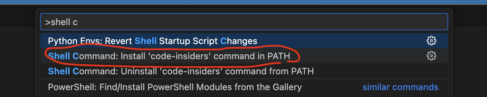
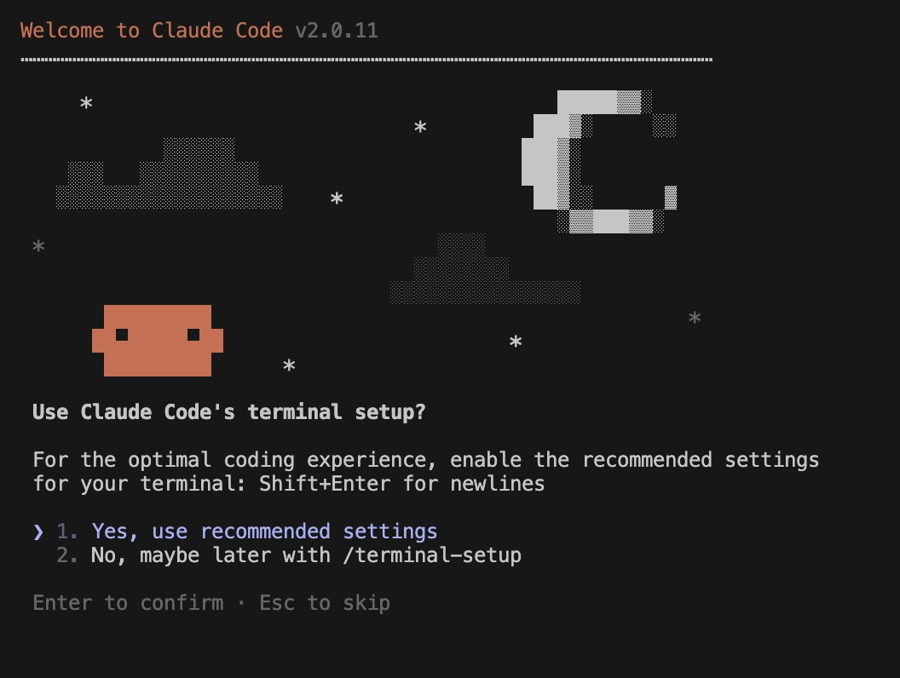
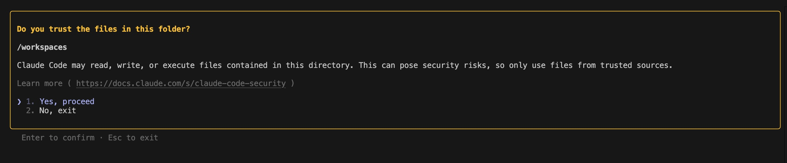
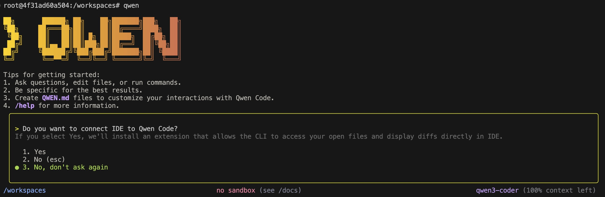
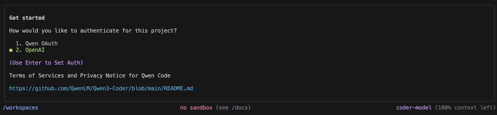

Prerequisites
- Git + GitHub account, and VS Code with the Dev Containers extension installed.
- Access to Lingaro GenAI Proxy and a valid API key (will go into
.envlater). Get it via the Teams GenAI Proxy Bot. - Docker Desktop or Docker Engine running locally.
6-Step Setup
-
Create a GitHub repository (public or private). Recommended name:
devcontainer-starter.Make sure Issues and Actions are enabled (default settings are fine). -
Download the installer
get-devcontainer.shinto the root of your repo.
curl -fsSLo get-devcontainer.sh \ https://raw.githubusercontent.com/Lingaro/devcontainers-templates/main/hackathon/get-devcontainer.sh
orwget -O get-devcontainer.sh \ https://raw.githubusercontent.com/Lingaro/devcontainers-templates/main/hackathon/get-devcontainer.sh
orPowerShell (Windows):iwr https://raw.githubusercontent.com/Lingaro/devcontainers-templates/main/hackathon/get-devcontainer.sh -OutFile get-devcontainer.sh
-
Run the installer (grant execute permissions if needed):
chmod +x get-devcontainer.sh && ./get-devcontainer.sh
Note (Windows + Git): If the file opens in Notepad or shows line-ending errors, set UNIX line endings:git config core.autocrlf inputand re-download the script. -
Fill in environment variables – the installer will create a
.devcontainer/folder with sample files, including.env.example.cp .devcontainer/.env.example .devcontainer/.env
Open.devcontainer/.envand fill in values. Most important:LLM_API_KEY=You can obtain your API key using the Lingaro GenAI Proxy Bot on Microsoft Teams: Open Teams Bot. -
Open in Dev Container – in VS Code click the Dev Containers icon in the bottom-left corner and select Reopen in Container.
Or from the Command Palette: ⇧⌘P / Ctrl+Shift+P → “Dev Containers: Reopen in Container”.If VS Code PATH is not set, an error may occur. Fix by running “Shell Command: Install 'code' command in PATH” (see section below).
-
Done! After a few moments your DevContainer will start with pre-installed tools: GitHub Copilot, Cline, Claude, Qwen.
CopilotClineClaudeQwen
Common Issues
- Docker not running – start Docker Desktop or Docker Engine and retry.
- Registry access denied – log in if required (e.g.
docker login ghcr.io). - Permission denied – use
chmod +xas in step 3. - Missing .env vars – missing GenAI Proxy key will cause LLMs to fail in your workspace.
Launching VS Code from the Terminal
If you can’t open VS Code using code . from the terminal, you can easily fix it from the VS Code interface:
- Launch Visual Studio Code.
- Open the Command Palette (Cmd+Shift+P on macOS or Ctrl+Shift+P on Windows/Linux).
- Type shell command in the search bar.
- Select the option “Shell Command: Install 'code' command in PATH.”
- After completing these steps, you can open VS Code directly from any terminal using
code .
This method works for both VS Code Stable and VS Code Insiders.
Post‑installation: AI tools in your DevContainer
These tools are preinstalled and ready after step 6: GitHub Copilot Cline Claude Qwen. They use your Lingaro GenAI Proxy key from .devcontainer/.env (LLM_API_KEY) where applicable.
Claude — first run (CLI)
- Terminal → New Terminal
- Run:
claude - Follow recommended options:
Use recommended defaults shown in the screenshot.

- Terminal setup: choose recommended options 
- Trust this workspace: choose recommended 
- Optional: show help:
claude --help
Qwen — first run (CLI)
- Terminal → New Terminal
- Run:
qwen - When asked to connect to the Qwen IDE plugin, you may decline (recommended for CLI‑only use). 
- Select authentication method: OpenAI. 
- Optional: show help:
qwen --help
Notes
- GitHub Copilot works out of the box in this DevContainer. Sign‑in may be requested by VS Code on first run.
- Cline is preinstalled. Open the Cline panel to start an agent session. You can point Cline to the same proxy/API key when selecting a model provider.
- If an LLM tool cannot connect, verify Docker is running and that
.devcontainer/.envhas a validLLM_API_KEY. Rebuild the container after changes.
Specification
Python: Version 3.12-slim, based on Debian Bookworm, optimized for lightweight development.
Installed Tools:
- General utilities: Includes git, curl, vim, htop, telnet, net-tools for debugging and system administration.
- Azure CLI: Manage Microsoft Azure resources.
- Zulu OpenJDK 17: Java runtime environment for JVM-based applications.
- Node.js: Version 20, for JavaScript and AI tools installations.
- Elinks: A lightweight text-based web browser for command-line environments, facilitating quick navigation and debugging.
- AI Tools: GitHub Copilot, Cline, Anthropic's Claude Code, and Qwen Code, supporting AI-assisted coding and OpenAI API compatibility.
Use Cases: Data science workflows, Azure/Databricks integration, Python prototyping, and AI API interaction.